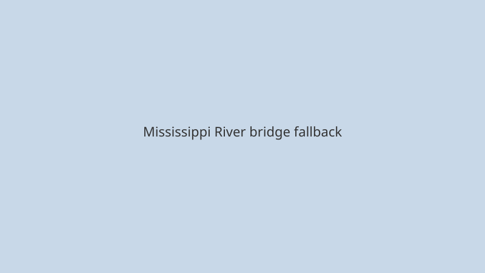

United States · Maritime · 14 November 2026
Tanker collides with docked river cruise boat in New Orleans; all accounted for

What is agreed across desks
On Friday 13 November 2026 at approximately 12:30 p.m. local time the tanker Atlantic Asphalt, a Marshall Islands-flagged vessel approximately 520 feet long, collided with the docked American Cruise Lines paddlewheeler American Heritage on the Mississippi River near the Port of New Orleans. The cruise vessel, which had roughly 180 to 190 passengers and crew aboard, rolled onto its side and took on water as people were disembarking. Mayor Helena Moreno stated that all individuals aboard both vessels were accounted for. Thirty-two people were transported to hospitals with non-critical injuries. River traffic in the area was temporarily closed. The U.S. Coast Guard and local harbor police led the rescue. The National Transportation Safety Board is investigating.
What is only a quote
Coast Guard Captain Melanie Burnham said the tanker appeared to have experienced a loss of steering control. Mayor Moreno and Louisiana Governor Jeff Landry described the outcome as a “miracle on the Mississippi.” These statements reflect official assessments pending the formal investigation report.
Mechanism and history
The Mississippi River at New Orleans is a major commercial waterway with heavy barge and tanker traffic. River pilots board vessels for the transit past the city. The American Heritage is a modern river cruise paddlewheeler operated by American Cruise Lines. The Atlantic Asphalt is a product tanker. Steering or propulsion failures on large vessels in confined river channels can produce rapid course changes. The precise sequence of events, including whether the failure was mechanical, electrical, or related to pilot inputs, will be determined by the NTSB investigation, which typically takes months to complete.
What the story is not
This is not a report of fatalities. No deaths have been confirmed. It is not an event involving a large ocean-going cruise ship; the vessel was a river paddlewheeler. It does not yet establish liability or the root mechanical cause.

Source articles and scores
| Outlet | Headline | T | N | C |
|---|---|---|---|---|
| Reuters | Tanker collides with cruise ship in New Orleans, 32 hospitalized | 96 | 0 | 100 |
| CNN | Tanker ‘lost control’ and hit cruise ship in New Orleans | 95 | 0 | 95 |
| NOLA.com | 180 aboard cruise ship rescued safely after Mississippi River tanker crash | 95 | 0 | 98 |